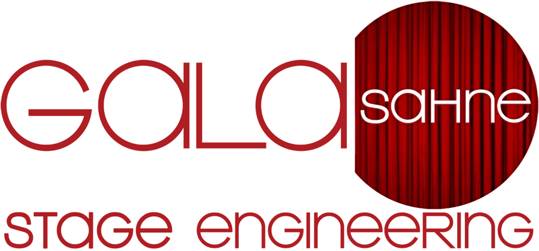

Bakım Formu
Periyodik bakım formunu telefondan doldur, imzalat, PDF gönder
Devreye Alma
Eksen eksen devreye alma kontrol listesi ve rapor (iPad)
Abkant Hesap
Tonaj, V kanal, açınım ve kesit çizimi; deneme bükümüyle K faktörü düzeltme